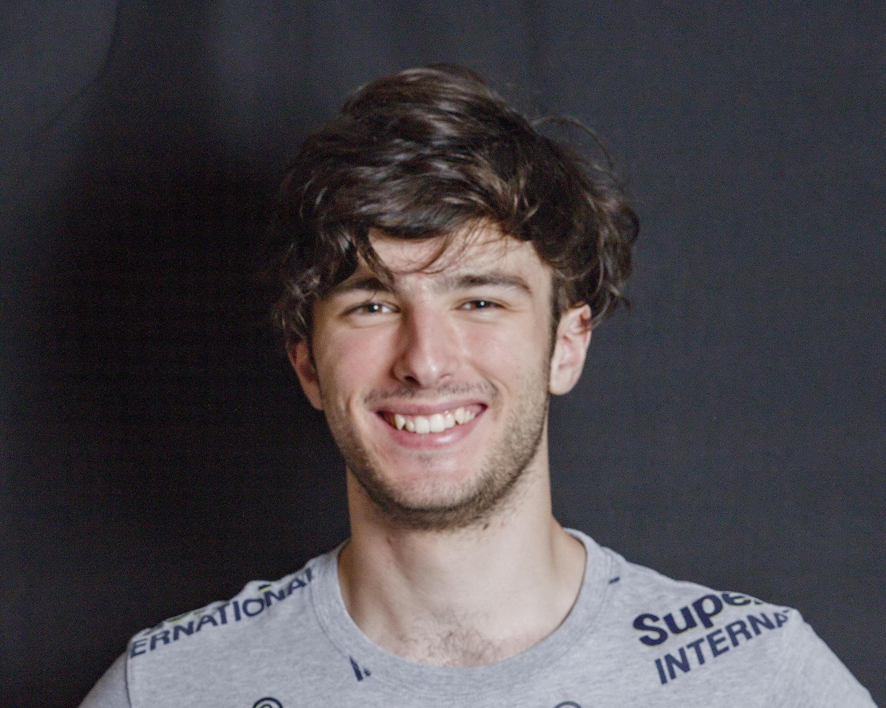

Resume
Julien Barozet-Golbery
M.Sc. student in Computer Science (AI & Data Science) at EPFL · World models for Physical AI and Generative AI
Lausanne, CH (current) · Paris, FR (hometown)
About me
Master’s student at EPFL researching world modeling for Physical AI and Generative AI. Working across multiple research labs has taught me methodological rigor and the adaptability to get up to speed quickly with new techniques and domains. I’m also an outgoing, passionate person and genuinely a team player, who firmly believes I have a role to play in making the work environment more enjoyable for everyone. Looking for my next challenge!
Education & Work Experience
- 09/2025 – 02/2028 (Expected)
- M.Sc. in Computer Science specialized in AI and Data Science at EPFL, GPA: 5.45/6
- 09/2022 – 07/2025
- B.Sc. in Computer Science at EPFL
-
Research Track Lead + Project Lead at EPFL AI Team
Sep 2025 – Present- Led a diverse team of 50+ researchers (undergraduates, graduates and PhDs) and engineers across 10+ interdisciplinary projects at EPFL’s AI Team, with partnerships with CERN and EPFL labs (NeuroAI, LIAC).
- Mentored and advised project teams, managed hiring, supervised progress to keep projects on track, pitched our expertise to prospective partners and translated their research gaps into concrete project outlines and roadmaps.
-
Teaching Assistant
Sep 2024 – Jul 2026- Supported 150+ students in their learning journey. Key responsibilities included grading, tutoring, holding exercise sessions, enabling students to develop conceptual understanding and improve their academic performance.
- Courses included Introduction to Machine Learning, Analysis I and Linear Algebra.
-
Machine Learning Engineer Intern at VikitAI
Jul 2025 – Aug 2025- Developed a Python-based AI agent backend using LangChain, formatted as a REST API with FastAPI, and deployed to Google Cloud Platform via Docker container.
- Built a React.js web application with Stripe-based credit system integration, reducing process execution time drastically.
Publications
-
NeurIPS 2026 ML4Molecules Workshop
Projects
-
BRAIN Project (with EPFL NeuroAI Lab)
Feb 2026 – Present- Reconstructed/Retrieved the image or sound perceived by a person from non-invasive EEG brain recordings, which are highly noisy and subject-dependent time series.
- Fine-tuned, optimized and benchmarked an EEG foundation model using LoRA combined with contrastive CLIP/CLAP alignment as a replacement for EEG decoders, aiming at reaching real-time performance while preserving accuracy.
- Shipped an end-to-end EEG-to-image demo with <1s latency, retaining ∼70% performance across metrics (top-k retrieval, SSIM, PixCorr, etc.), using as little as 25% of the data and 1/5 the training time for subject adaptation.
-
Evaluation Suite Design for Surgical Robot World Models
Sep 2026 – Present- Designed an evaluation suite for surgical robot world models, covering action faithfulness and tissue-biomechanical plausibility, to guide model development. Applied to NVIDIA Cosmos 3, under the supervision of an NVIDIA ML Engineer.
-
Improving Attention in Egocentric World Models (with EPFL VITA Lab)
Sep 2026 – Present- Investigated different attention mechanisms such as register-token attention (à la VGGT-Omega) as an efficient replacement for full attention in diffusion world models for egocentric driving, targeting reduced training/inference time.
-
ATLAS Project (with CERN)
Sep 2025 – Feb 2026- Accelerated Geant4-based Monte Carlo calorimeter simulation for the LHC through generative ML methods.
- Used Stochastic Interpolants for low-resolution and an EDM model distilled through continuous-time Consistency Distillation for high-resolution simulation aiming at faster inference time.
- Reached results close to established SOTA while using less memory.
-
Dark Matter Density Generation (with EPFL LASTRO Lab)
Sep 2025 – Dec 2025- Generated dark matter galaxy cluster density maps from physical parameters.
- Implemented a Diffusion Transformer (DDPM) with Adaptive LayerNorm conditioning on parameter embeddings.
- Cut simulation time from 5–7 days to minutes compared to numerical simulations, achieving 0.8–1.0 cross-correlation at large scales and near-zero log-PSD ratio across all frequencies.
Skills
- Programming languages
- Python, C, Scala, Kotlin, Java, VHDL, Assembly, SQL
- Engineering/DevOps
- Linux, Git, Docker, SLURM (multi-GPU HPC)
- Machine Learning/Data
- PyTorch, scikit-learn, Matplotlib, Seaborn, Pandas, NumPy, LangChain
- Languages
- French (Native), English (C1)